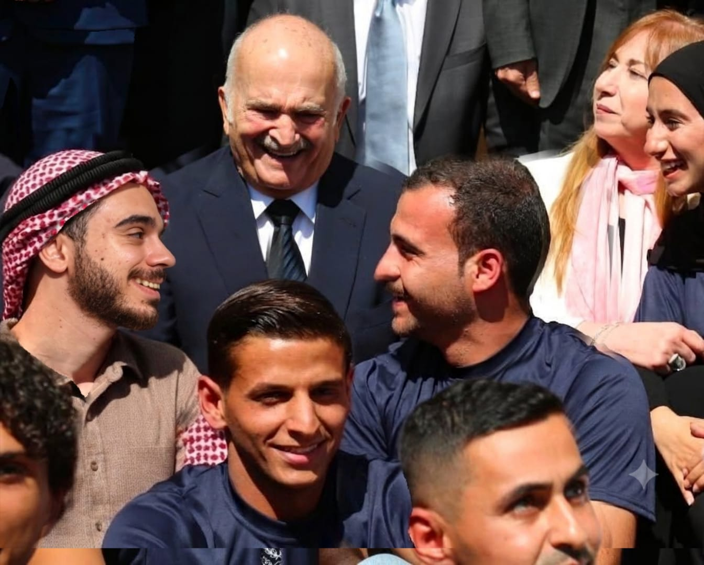
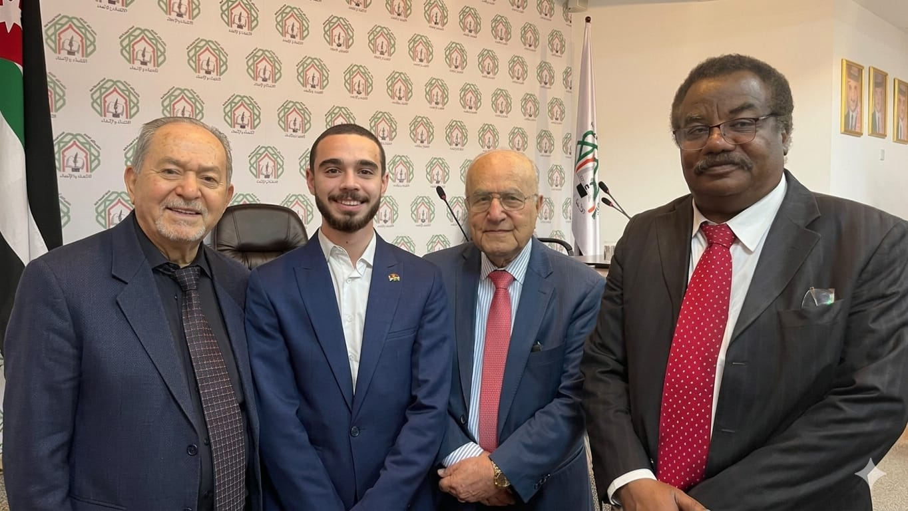
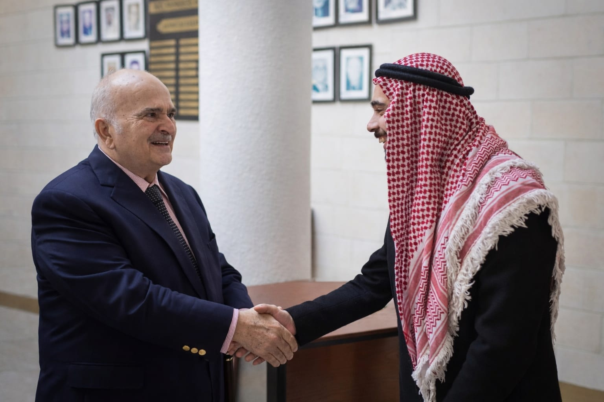
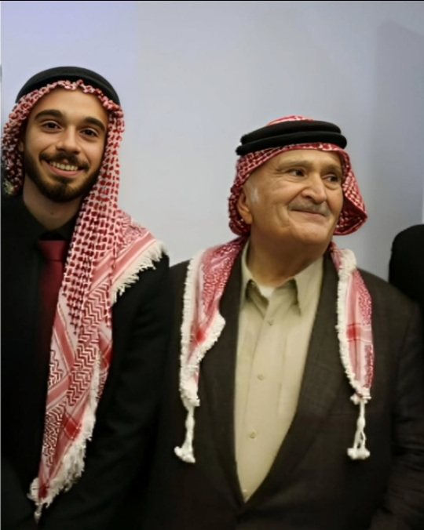
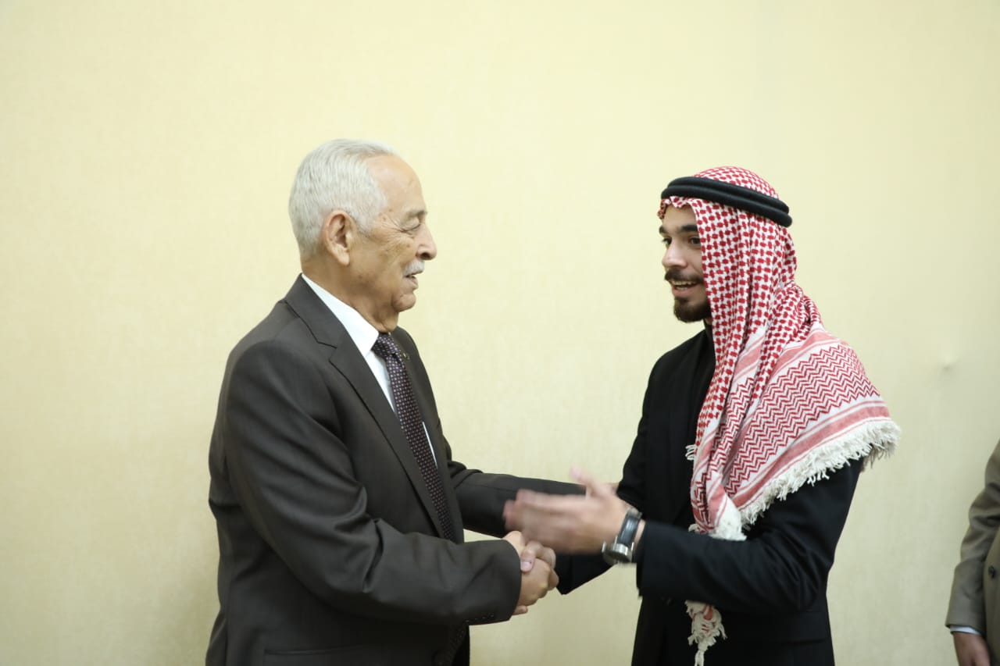
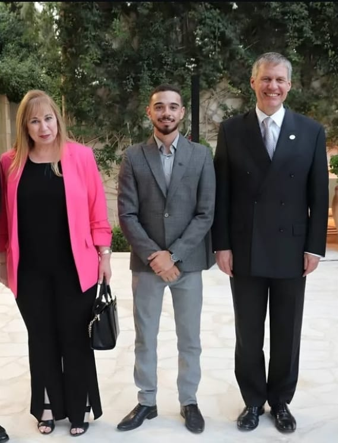
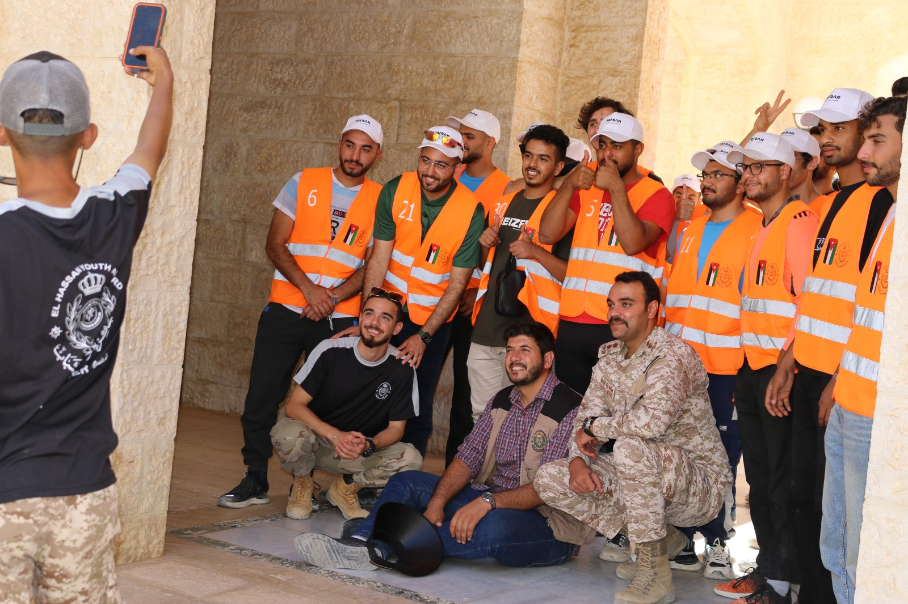
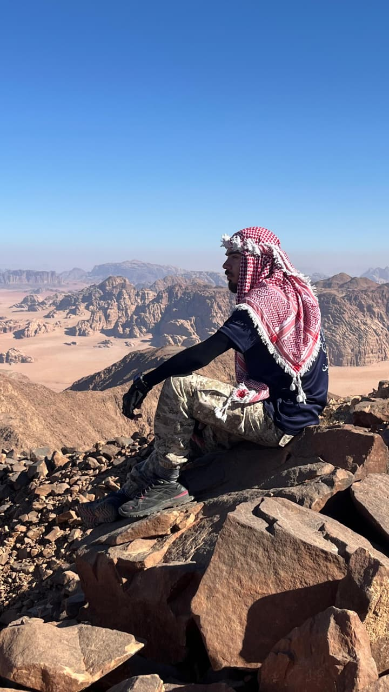
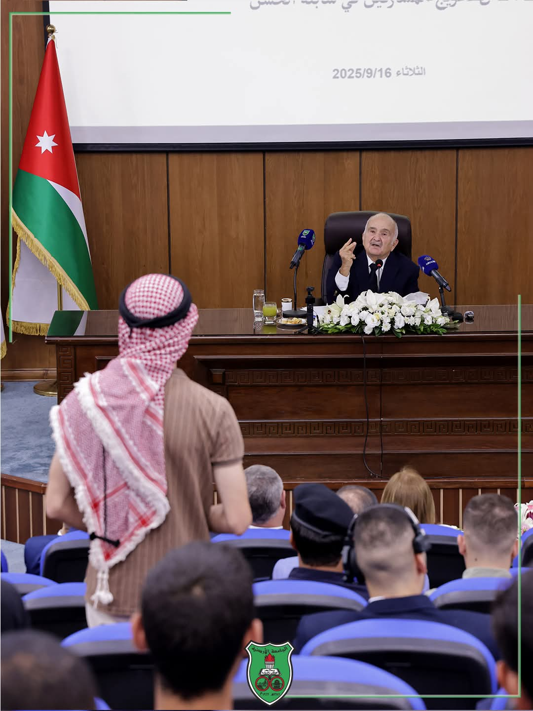

توثيق بصري وحقائق حيّة لأبرز المحطات الوطنية، اللقاءات الرسمية، والسجلات الأكاديمية والمهنية.

ضحكة عفوية مع سمو الامير الحسن بن طلال خلال تخريج فوج سابلة الحسن 2025

صورة ودية مع دولة الدكتور عدنان بدران و سعادة السفير السابق الصادق الفقيه و الدكتور ابراهيم بدران

لقاء صاحب السمو الملكي الامير الحسن بن طلال خلال مؤتمر الفكري السنوي الثاني "الدولة الوطنية : افقا عربيا" في منتدى الفكر العربي

من دعوة سمو الامير الحسن بن طلال الى جامعة الحسين بن طلال في معان

صورة من لقاء عطوفة رئيس الديوان الملكي يوسف العيسوي

بدعوة خاصة من سفير المملكة المتحدة لبريطانيا العظمى وإيرلندا الشمالية فيليب هول (Philip Hall) في منزلة - عمان. 🇬🇧 بحفل استقبال لوفد جائزة دوق أدنبرة الدولية وأمينها العام السيد مارتن. وبحضور العديد من الشخصيات المرموقة معالي الوزير السابق ايمن مفلح والدكتورة خولة الحسن

لقطة تذكارية من سابلة الحسن 2024

في اعلى قمة جبلية في الاردن "جبل ام الدامي" الذي يرتفع عن سطح البحر 1854م بعد تسلق دام 3 ساعات

حوار بيني و بين سمو الامير الحسن خلال تخريج فوج سابلة الحسن 2025 وطرح فكرة بودكاست على صاحب السمو الملكي
من داخل قبة البرلمان الاردني في زيارة خاصة
يمكنك تصفح الملف والشهادات المعتمدة مباشرة عبر النافذة أدناه بسلاسة تامة دون مغادرة الصفحة: